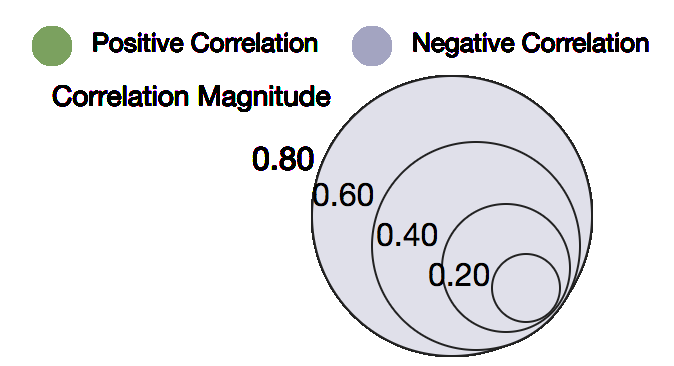

Home
Map Explorer
Regional Variance
Happiness Indicators
Happiness Indicators by Region
Feature Trend
Happiness Interactions
Countrywise Comparisons
Bubble Plot of Feature Importance on Happiness Score

Feature Importance on Happiness Scores
Feature Importance
Group By Category